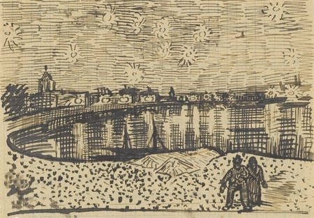

starseed / star people
スターシード
ここが自分の居場所だと思えない。家族のなかでも、どこか浮いている。子どものころ、よく星空を見上げていた。この分野には、その感覚に「スターシード」という名前があります。何だと言われているのか、しるしは何か、どこから来た言葉なのか。そして「居場所がない」という感覚に心理学がつけている名前。

ここが自分の居場所だと、どうしても思えない。家族のなかでも、自分だけ違う気がする。子どものころ、ひとりで窓から星空を見上げていた。人より敏感で、なぜか「何かをしなければ」という感じがずっとある。
この分野には、その感覚に名前があります。「スターシード」。この言葉で検索してここへ来た人は、たぶん、しるしの一覧を読みたいのだと思います。このページでは、まずこの分野で名前の知られた人がそれをどう説明しているかを見て、そのあとで、この言葉がどこから来たのかと、「居場所がない」という感覚に心理学がつけている名前を、隣に置きます。
スターシードとは、何だと言われているのか
この分野の教師、クリスティーナ・ロペス（理学療法の博士号と公衆衛生の修士号を持つ元臨床家）は、こう説明しています。
ロペスは、「大多数は善意のものだが、すべてではない」と断ったうえで、「この動画では善意のものだけを扱う」としています。「人が目覚めるほど、そうでないものは力を失うから」と。
しるしは何だと言われているのか
ロペスが挙げている10のしるしです。彼女自身、「これで全部ではない」と言っています。
2．体が居心地悪い — 「人間の形に多く生まれていないスターシードにとって、この体は異質です。とくに、感情が体で感じられることが、強すぎることがある」
3．家族のなかで浮いている — 1よりも深い、家族という単位のなかでの疎外感。「黒い羊」。兄弟や親と、見た目まで違うことがある、と
4．変化が速い — 目覚めたあと、エネルギーの転換がほかの人よりずっと速い
5．別の惑星の記憶 — 瞑想や夢のなかで、地球とまったく違う場所を細部まで見る。ロペス自身にもある、と
6．空を見上げる — 「子どものころ、少し孤独で、ただ窓の前に立って、星を見上げていた」
7．敏感である — 大多数はエンパスかHSP
8．目的の感覚 — 「人類を助けるために来ているので、目的の感覚がとても強く、それが一生を動かす」
9．古い魂の感じ — 「年齢を超えた知恵がある感じ。何度もこの世に来ているから」
10．広がろうとする — 生涯、学ぶことをやめない
10のうち、1、3、6、7、9は、読んで「自分のことだ」と思う人が多いはずのものです。この点については、下の「心理学の側では」に書きました。
種類があると言われている
・プレアデス — 「未来の人間」。癒しの力、女性的なエネルギー。いちばん多い
・アークトゥルス — 「もっとも進んだ」型。建設者・指導者と、教師の二種類
・シリウス — 夜空でいちばん明るい星から。平和の守り手、穏やかなエネルギー
・アンドロメダ — 心の中心にいる、子どものような純粋さ。数は少なく、「この密度に降りてくるのが痛い」
・レムリア／アトランティス — 沈んだ大陸の、過去生の記憶として
・ライトワーカー — 奉仕の使命を持つ魂。「ただし、ライトワーカーがみなスターシードとは限らない」
どこから来た言葉なのか
この言葉には、はっきりした始まりがあります。そして、思っているより新しいものです。
アメリカの著述家ブラッド・スタイガー（1936〜2018年）が、1976年の本『Gods of Aquarius（水瓶座の神々）』で「スター・ピープル」という考え方を出しました。「地球外からの訪問に結びついた特別な遺伝子の系統から来た人間」で、地球には誕生を通じて、あるいは既存の人間の体に入る形（ウォークイン）で来る、と。
彼らは自分の正体、起源、目的についての記憶を失っており、「目覚め」の過程——ゆっくり気づいていく場合も、突然の場合もある——を通じて、それを取り戻す、とされます。いま語られている「スターシードの目覚め」は、この1976年の形をそのまま受け継いでいます。
スタイガーはアイオワ州の農場で育ち、11歳のときの臨死体験で信仰を変えたと語っています。170冊近い本を書き、1,700万部を売りましたが、学者や懐疑派からは「科学的な証拠のない突飛な主張」と広く批判されました。アトランティスは実在したと信じていました。
作家フィリップ・K・ディックが1970年代の終わりにスタイガーに手紙を書き、自分もスター・ピープルのひとりかもしれないと伝えた、という話も残っています。
ワシントン・ポストの記者ジョエル・アッケンバックは、プレアデスから来たと語る人たちに取材した本のなかで、こう書いています。「スターシードは、伝統的なUFO研究家がいちばん嫌うタイプのニューエイジの人物だ。UFO研究家は外へ、宇宙へ答えを探しにいく。ニューエイジの人たちは、内へ探しにいく」。スターシードという言葉は、宇宙人の話のように見えて、実際には「自分は何者か」という内側の問いの言葉だ、ということです。
近い言葉：インディゴチルドレン
「特別な子どもたち」という形の、きょうだいのような言葉があります。1970年代にナンシー・アン・タピーが「藍色のオーラを持つ子ども」として言いはじめ、1998年の本で広まった「インディゴチルドレン」です。「スターチルドレン」と呼ばれることもあります。挙げられる特徴は「共感的で好奇心旺盛」「家族や友人には変わっていると思われる」「自分には生まれてくる意義があったと強く信じる」など。スターシードの10のしるしと、よく似ています。
この言葉については、医学の側からはっきりした懸念が出ています。日本語版ウィキペディアの項目によれば、インディゴとされる子どもの多くはADHDと診断されており、精神衛生の専門家は、子どもを「インディゴ」と呼ぶことが、適切な診断と治療を遅らせることを心配しています。ある心理学者の言葉が引かれています。「親なら、自分の子どもに疾患があると考えるより、才能を持つと考えるほうがずっと魅力的だ」。
心理学の側では
「居場所がない」という感覚
心理学者ロイ・バウマイスターとマーク・リアリーは、「所属の欲求は、人間の動機として根本的であり、あらゆる文化とあらゆる種類の人に見られ、満たされないままだと深刻な結果が生じうる」と論じています。人は誰でも、ある最低限の量の、定期的で満足のいく人との関わりを必要とする。それが得られないと、孤独、心の苦痛、そして新しい関係を作りたいという強い欲求が生じる、と。
マズローも、所属の欲求を人間の五つの基本的な欲求のひとつに置きました。
そして、もうひとつ。所属への動機が強い人ほど、自分の関係に満足しにくく、孤独になりやすい傾向がある、という研究があります。「居場所がほしい」という気持ちが強い人ほど、「居場所がない」と感じやすい、ということです。
ロペスの10のしるしのうち、1（属していない感じ）、3（家族のなかで浮いている）、6（ひとりで空を見上げていた）は、この「満たされていない所属の欲求」の描写として、そのまま読めます。この分野はそれを「別の星から来たから」と説明し、心理学は「人間なら誰にでもある欲求が、満たされていないから」と説明します。感覚そのものは、どちらの説明でも同じものです。
誰にでも当てはまる一覧について
インディゴチルドレンの特徴の一覧について、批評家は「曖昧で、誰にでも当てはまる」と言い、これをバーナム効果（太陽星座のページに書きました）の一種だとしています。ロペスの10のしるしも、形は同じです。「敏感である」「学ぶのが好き」「年齢より深いものがある気がする」は、多くの人が自分のことだと感じる文です。これは、ロペスの一覧が役に立たないという意味ではありません。ただ、「10のうち8つ当てはまった」ことは、それだけでは何かの証明にはならない、ということは、知っておいてよいことです。
何をすればよいと言われているのか
・型の一覧を聞きながら、体の反応を見る。「かちりと来る」ものが自分の型
・目覚めると、目的の感覚が強まる。その方向へ注意を向ける
・敏感さは「移り変わりを助けるために備えてきたもの」として使う
心理学の側で言われていること
・所属の感覚は、本当に聞いてもらうことで作られる。ウィキペディアの項目は、「無条件の肯定的な関心」をもって聞いてもらえたと感じるとき、人はずっと強く受け入れられていると感じる、としています。つまり、居場所は「見つける」ものというより、聞いてもらえる相手がひとりいることから始まる、と
この二つは、矛盾しません。「別の星から来た」と思うことで自分を説明できて楽になる人がいて、同時に、その人にも、聞いてもらえる相手はいたほうがいい。スターシードという言葉で検索する人の多くが、実際には「同じ感覚を持つ人を探している」ように見えるのは、上に書いたアッケンバックの「内へ探しにいく」という観察と重なります。
近いことを言っているもの
- インディゴチルドレン — 上に書いた、「特別な子ども」の側の言葉
- ライトワーカー — 奉仕の使命を持つ魂。ロペスは「スターシードとは限らない」と言っています
- エンパス — ロペスが「大多数のスターシードはこれ」と言う言葉。別のページで扱っています
- 前世 — 「別の惑星の記憶」「レムリアの記憶」は、前世の記憶の一種として語られます。別のページで扱っています
- 所属の欲求 — 上に書いた、心理学の側の名前です
出典・参考
- Christina Lopes, Are You A STARSEED? [Check These 10 Clear Signs!]（YouTube）スターシードの定義、10のしるし、種類。引用は自動生成の字幕による
- Star people (New Age)（英語版ウィキペディア）ブラッド・スタイガー（1976）による起源、ワシントン・ポスト記者の観察
- Brad Steiger（英語版ウィキペディア）提唱者の来歴
- インディゴチルドレン（日本語版ウィキペディア）近い考え方の来歴（1970年代タピー、1998年）と、医学の側からの懸念
- Belongingness（英語版ウィキペディア）「所属の欲求」（バウマイスターとリアリー）、マズロー
関連することば
 ascension / 5Dアセンションと5次元「アセンション症状」と検索した。骨まで疲れている。動悸がする。友人が急にいなくなった。理由の分からない悲しみがある。この分野で名前の知られた人は、それを何だと説明し、何をすればよいと言っているのか。「地球が5次元へ移る」という話はどこから来たのか。そして、同じ経験に精神医学がつけている名前。
ascension / 5Dアセンションと5次元「アセンション症状」と検索した。骨まで疲れている。動悸がする。友人が急にいなくなった。理由の分からない悲しみがある。この分野で名前の知られた人は、それを何だと説明し、何をすればよいと言っているのか。「地球が5次元へ移る」という話はどこから来たのか。そして、同じ経験に精神医学がつけている名前。 ascendant / rising signアセンダント（上昇宮）自分の星座の説明が、どうも自分に合わない。初対面の人から見た自分と、自分で思う自分が違う。占星術がそこに与えている名前が、アセンダント。太陽・月とあわせて「ビッグスリー」と呼ばれる3つ目。出生時刻が要る理由も。
ascendant / rising signアセンダント（上昇宮）自分の星座の説明が、どうも自分に合わない。初対面の人から見た自分と、自分で思う自分が違う。占星術がそこに与えている名前が、アセンダント。太陽・月とあわせて「ビッグスリー」と呼ばれる3つ目。出生時刻が要る理由も。 overactive mind / monkey mind頭のなかが静まらない考えが止まらない。夜中に目が覚めて、頭が回りはじめる。瞑想しようとしても、五分ともたない。「頭を静めなさい」と言われるけれど、どうすれば。この分野で名前の知られた人が、四年の隠遁生活のあとに街の暮らしで見つけた四つの方法と、「さまよう心」について脳科学が調べてきたこと。「心猿」という古い言葉も。
overactive mind / monkey mind頭のなかが静まらない考えが止まらない。夜中に目が覚めて、頭が回りはじめる。瞑想しようとしても、五分ともたない。「頭を静めなさい」と言われるけれど、どうすれば。この分野で名前の知られた人が、四年の隠遁生活のあとに街の暮らしで見つけた四つの方法と、「さまよう心」について脳科学が調べてきたこと。「心猿」という古い言葉も。 affirmationsアファメーションは効くのか「私は豊かだ」「私は愛されている」と毎朝唱えている。でも、唱えるたびに、嘘をついている気がする。効いているのか、逆効果なのか。この分野で名前の知られた人が「これを先に身につけないと効かない」と言う一つのこつと、38の言葉。この言葉の来歴（1910年、1984年）、日本語の「言霊」、そして心理学が2009年に見つけた「効く人と、逆効果になる人」の違い。
affirmationsアファメーションは効くのか「私は豊かだ」「私は愛されている」と毎朝唱えている。でも、唱えるたびに、嘘をついている気がする。効いているのか、逆効果なのか。この分野で名前の知られた人が「これを先に身につけないと効かない」と言う一つのこつと、38の言葉。この言葉の来歴（1910年、1984年）、日本語の「言霊」、そして心理学が2009年に見つけた「効く人と、逆効果になる人」の違い。 toxic people一緒にいると疲れる人会うたびに、消耗する。二十分お茶をしただけで、空っぽになる。でも、親だから、同僚だから、子どもの父親だから、縁を切れない。この分野で名前の知られた人は、「切って終わり」とは言わず、三つの手順を挙げています。日本語の「モラハラ」という言葉の来歴と、「境界線」について心理学の側が言っていることも。
toxic people一緒にいると疲れる人会うたびに、消耗する。二十分お茶をしただけで、空っぽになる。でも、親だから、同僚だから、子どもの父親だから、縁を切れない。この分野で名前の知られた人は、「切って終わり」とは言わず、三つの手順を挙げています。日本語の「モラハラ」という言葉の来歴と、「境界線」について心理学の側が言っていることも。 how to pray祈り方宗教は持っていない。でも、祈りたいときがある。誰に、どう言えばいいのか。手を合わせるだけでいいのか。この分野で名前の知られた人が「宗教の祈りとの違い」を語り、四つの手順を挙げているもの。日本語の「祈り」の広さ——神棚から包丁塚まで——と、「祈りは効くのか」を1872年から調べてきた研究の側が言っていること。
how to pray祈り方宗教は持っていない。でも、祈りたいときがある。誰に、どう言えばいいのか。手を合わせるだけでいいのか。この分野で名前の知られた人が「宗教の祈りとの違い」を語り、四つの手順を挙げているもの。日本語の「祈り」の広さ——神棚から包丁塚まで——と、「祈りは効くのか」を1872年から調べてきた研究の側が言っていること。